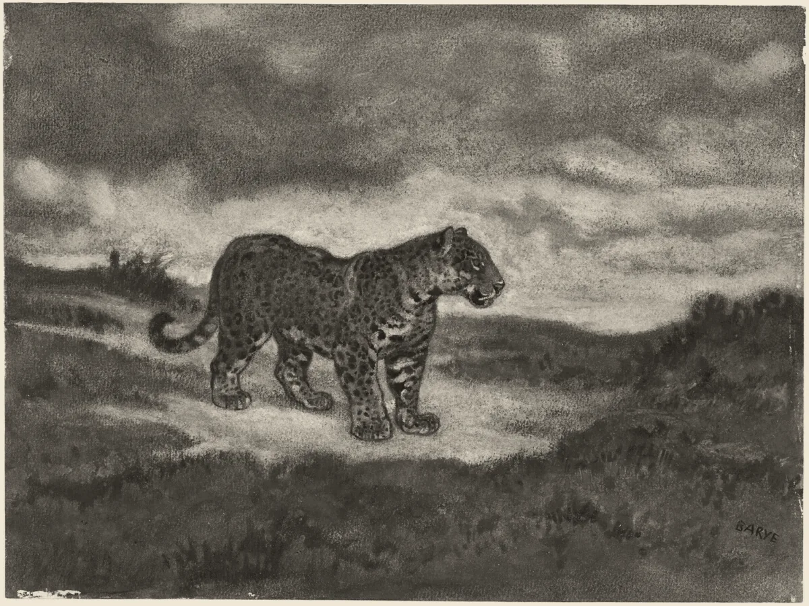

· Edición 82 · 4 min de lectura
Trece años mirando jaguares en Brasil: no siempre viven solos

Trece años mirando jaguares en Brasil: no siempre viven solos
Ver todo el tema, de principio a fin →
En pocas palabras. Los manuales describen al jaguar como un solitario que solo busca a otro para aparearse o para pelear. Un equipo que lo observó 13 años en los ríos del Pantanal, en Brasil, registró 167 encuentros: solo uno de cada cuatro fue agresivo, y los más amistosos fueron entre machos parientes. La clave parece ser la comida de sobra, así que no es una regla para todos los jaguares.
El dato curioso. Tras los incendios y la sequía de 2020, los jaguares que ya vivían en la reserva de Taiamã siguieron apareciendo en las cámaras casi tanto como antes, llegaron otros nuevos y siguieron comiendo sobre todo presas del agua: el río les sirvió de despensa de emergencia.
¿Qué hacían dos jaguares jugando frente a una cámara? En la Estación Ecológica de Taiamã, una reserva del norte del Pantanal a la que solo se llega en bote, unas cámaras trampa vigilaron a los jaguares entre 2014 y 2018.
Una de ellas grabó a dos machos adultos, que los científicos llamaron M27 y M29, jugando durante media hora frente al lente.
Eso no estaba en el libreto. Casi todos los grandes felinos, el jaguar incluido, se consideran solitarios: se juntan para aparearse o para disputar territorio. Como vecinos que solo se hablan para casarse o para pelear por la cerca.
¿Cómo se mira a un jaguar durante 13 años? Desde 2013, el Jaguar ID Project recorre en bote, cada día de la temporada seca, los ríos cercanos a Porto Jofre y fotografía a cada jaguar que asoma en la orilla.
Los reconocen por sus rosetas, las manchas de la piel, que no se repiten de un animal a otro, como una huella digital. Así sumaron 459 jaguares distintos en 1.710 días de recorridos: casi cinco años de salidas, repartidos en trece temporadas.
Con ese archivo, el equipo de la bióloga Valeria Boron, de la organización ambiental WWF en el Reino Unido, analizó cada encuentro entre dos jaguares en la revista Animal Behaviour.
¿Qué encontraron? Registraron 167 encuentros en los que participaron 69 jaguares. Solo uno de cada cuatro fue agresivo. Casi la mitad fueron entre dos machos, justo la pareja que en teoría peor se lleva.
Hubo acicalamiento (lamerse el pelaje uno al otro), juego y recorridos juntos. Y aquí está el giro: de cada tres encuentros amistosos, dos fueron entre parientes. Las peleas fueron sobre todo entre jaguares sin parentesco conocido.
Según Boron, entre parientes se relajan las disputas por territorio porque, al tolerarse, siguen favoreciendo a su propio linaje. Para un animal con fama de huraño, se parece bastante a una familia extensa.
Entonces, ¿por qué aquí sí? Por la comida. En Taiamã aparecieron restos de pescado en casi la mitad de los excrementos analizados, y de reptiles acuáticos, como los caimanes, en más de la mitad.
Con esa despensa vivían unos 12 jaguares en cada cuadrado de 10 kilómetros de lado, un récord en su momento. En los Llanos de Colombia, un estudio de la misma Boron contó entre uno y dos jaguares adultos en un área igual.
Con la nevera llena, nadie pelea por la última arepa. Los autores lo atribuyen a la abundancia de presas, a los territorios que se superponen y al parentesco.
Y no era la primera pista. En 2022 se describieron parejas de machos en el Pantanal y en los Llanos de Venezuela que duraron más de siete años: andaban juntos por el mismo territorio, aunque, a diferencia de los leones, no cazaban en equipo.
¿Es solitario el jaguar, entonces? Donde la comida escasea, casi siempre. Donde sobra, puede darse el lujo de la compañía. La soledad parece menos un rasgo de carácter que una cuenta de cuánto alcanza.
Pero ojo.
- Un lugar muy especial. Todo se vio desde el bote, en temporada seca, en orillas con muchísimas presas y muchísimos jaguares. Stijn Verschueren, biólogo de la Universidad de Berna que no participó, advirtió a Mongabay que quizá no valga para otros lugares.
- Una especie en retroceso. El jaguar vive en 18 países, de México a Argentina, pero desapareció de casi la mitad de su territorio histórico, según Panthera, una organización dedicada a los felinos.
Para conversar
La pregunta. Si a los jaguares los vuelve tolerantes tener comida de sobra, ¿cuánto de nuestras peleas entre vecinos, por el agua, el parqueadero o el ruido, es carácter y cuánto es escasez?
Para leer más
Libros para seguir con el tema
An Indomitable Beast: The Remarkable Journey of the Jaguar, de Alan Rabinowitz (Island Press, 2014). El zoólogo que fundó la primera reserva para jaguares, en Belice, cuenta la historia natural del animal desde sus orígenes y lo que hace falta para que sobreviva. Solo está en inglés; no encontramos traducción al español.
¿Tenemos suficiente inteligencia para entender la inteligencia de los animales? , de Frans de Waal (Tusquets, 2016; traducción de Ambrosio García Leal). Un primatólogo explica por qué durante mucho tiempo subestimamos lo que los animales saben hacer, a menudo porque los medíamos con reglas humanas.
¿Le interesa ver las fuentes?
Todos los documentos y datos que usamos
14 fuentes: 6 académicas, 2 de organizaciones, 3 de prensa, 3 de referencia.
- Académica Boron y otros, Animal Behaviour (2026), en ScienceDirect. Kinship-driven interactions and social organization in jaguars: 13 years of direct observations in the Northern Pantanal, Brazil
- Prensa Mongabay (noviembre de 2026). In Brazil's prey-rich Pantanal, jaguars reveal a surprisingly social side
- Prensa BBC Wildlife, Discover Wildlife (noviembre de 2026). Researchers watched these elusive cats for 13 years
- Académica Eriksson y otros, Ecology (2022), vol. 103, e3543. Extensive aquatic subsidies lead to territorial breakdown and high density of an apex predator
- Académica Universidad Estatal de Oregón, comunicado (octubre de 2021). Study yields insights into the ecology of fishing jaguars, including rare social interactions
- Prensa Science News (2021). Huge numbers of fish-eating jaguars prowl Brazil's wetlands
- Académica Eriksson y otros, Global Change Biology (2025), en el repositorio de la Universidad de East Anglia. Wildfire and Drought Alter the Ecology of Jaguars and Co-Occurring Mammals in the World's Largest Wetland
- Académica Jędrzejewski y otros, Behavioral Ecology and Sociobiology (2022), vol. 76, art. 121, copia en Onçafari. Collaborative behaviour and coalitions in male jaguars (Panthera onca): evidence and comparison with other felids
- Organización Panthera (diciembre de 2022). New Study: Male Jaguars Form Coalitions
- Académica Boron y otros, PLoS ONE (2016), en PMC. Jaguar Densities across Human-Dominated Landscapes in Colombia: The Contribution of Unprotected Areas to Long Term Conservation
- Organización Panthera. About Jaguars
- Referencia Art Institute of Chicago. Jaguar Standing, de Antoine-Louis Barye (1830/50), ficha de la obra
- Referencia Island Press, distribuido por Princeton University Press (ficha del libro). An Indomitable Beast: The Remarkable Journey of the Jaguar, de Alan Rabinowitz (Island Press, 2014)
- Referencia Planeta de Libros (ficha del libro). ¿Tenemos suficiente inteligencia para entender la inteligencia de los animales?, de Frans de Waal (Tusquets, 2016; traducción de Ambrosio García Leal)
Glosario
Las palabras técnicas, explicadas
- Pantanal: el humedal más grande del mundo, una llanura del centro de Sudamérica que se inunda cada temporada de lluvias.
- Cámara trampa: una cámara que se dispara sola cuando pasa un animal.
- Acicalamiento: limpiar o lamer el pelaje de otro; en muchos animales sirve para estrechar lazos.
- Coalición: una alianza estable entre machos que patrullan y defienden juntos un territorio.
Nota metodológica
Cómo se hizo esta edición y qué no pudimos verificar
Por qué esta historia. Es la primera edición de la puerta «historia». Miramos seis candidatas de las últimas semanas: los jaguares del Pantanal; un naufragio en Kekova, Turquía, presentado como el más antiguo del mundo; la tesis de que Verica, gobernante de la Britania de la Edad del Hierro, era una mujer; un ave gigante extinta identificada por un hueso guardado 17 años en la cueva del «hobbit» de Flores, en Indonesia; un roedor de unos 30 kilos que vivió hace 34 millones de años en Tailandia; y un barco de la Segunda Guerra Mundial hallado frente a Maine. Elegimos los jaguares porque es un animal que todos conocen, de nuestro continente, porque contradice una idea que casi todos tenemos y porque se apoya en un estudio revisado por pares y en trece años de datos. El naufragio de Kekova y lo de Verica están discutidos por otros expertos y se apoyan sobre todo en un anuncio; el ave y el roedor tienen menos historia que contar.
Qué verificamos y qué no. Las cifras del estudio (167 encuentros, 69 jaguares, cerca de una cuarta parte agresivos, dos de cada tres encuentros amistosos entre parientes y 13 grupos) salen del resumen publicado en Animal Behaviour. No pudimos abrir el artículo completo: el número de jaguares (459), los días de recorrido (1.710), la temporada de junio a octubre, Porto Jofre, la proporción de encuentros entre machos y la explicación de Boron vienen de Mongabay y de Discover Wildlife, que coinciden entre sí. Tampoco confirmamos la lista completa de autores ni la fecha exacta de publicación. La escena de M27 y M29 sale del estudio de Taiamã y del comunicado de la Universidad Estatal de Oregón. La comparación con los Llanos de Colombia junta dos cifras parecidas pero no idénticas: en Taiamã se contaron jaguares y en Colombia, adultos.
Imagen y libros. La acuarela de Barye viene del Art Institute of Chicago, que la tiene en dominio público. Ninguno de los dos libros está en el catálogo de Santo & Seña; los datos de autor, año y editorial salen de las fichas de las editoriales.